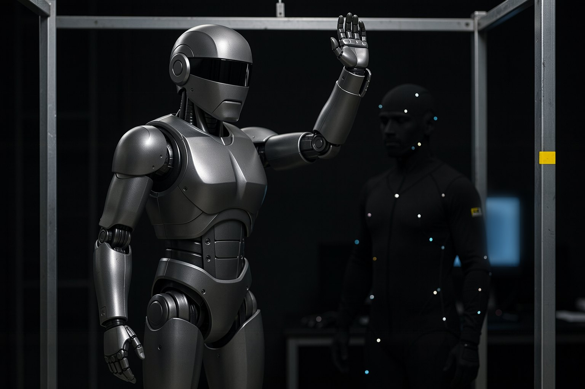
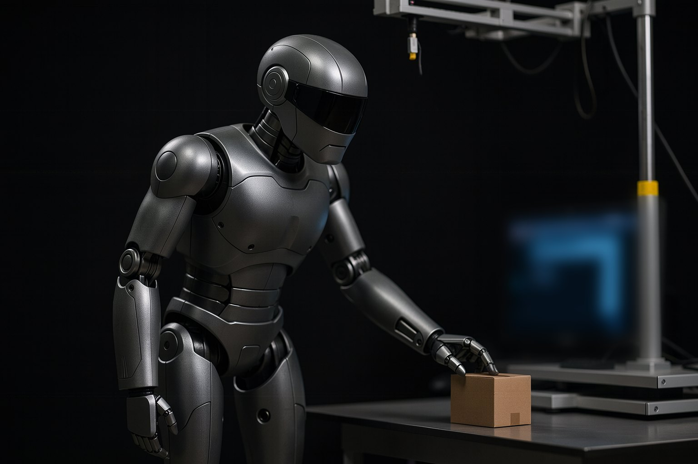
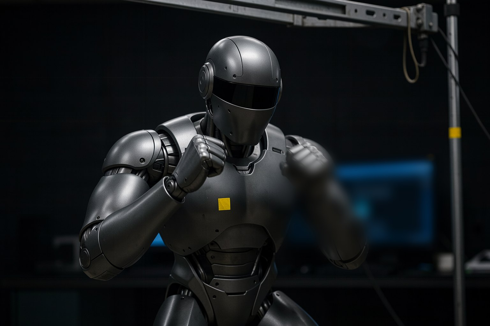
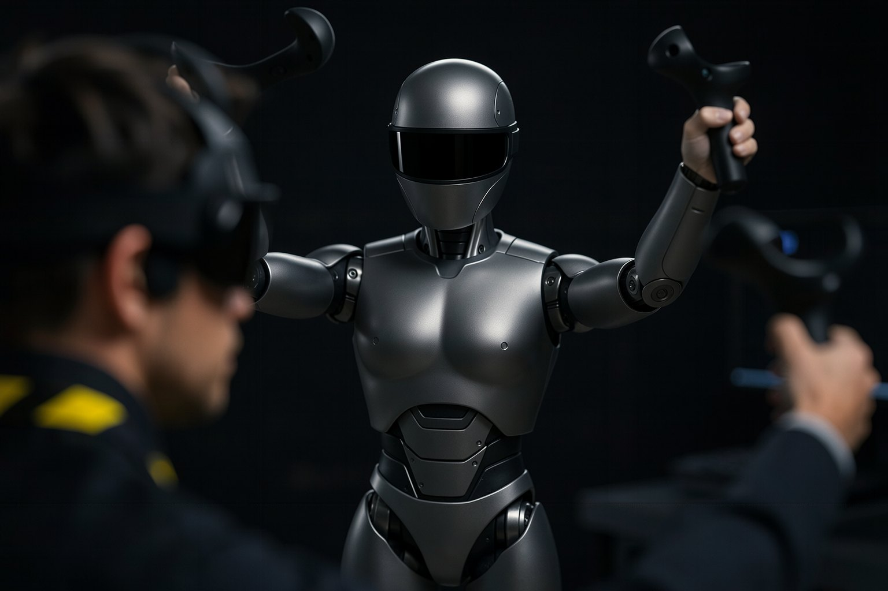
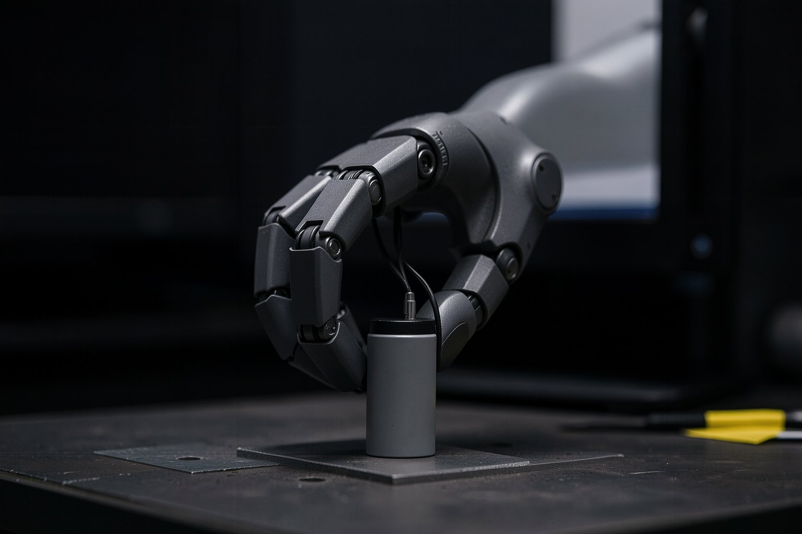
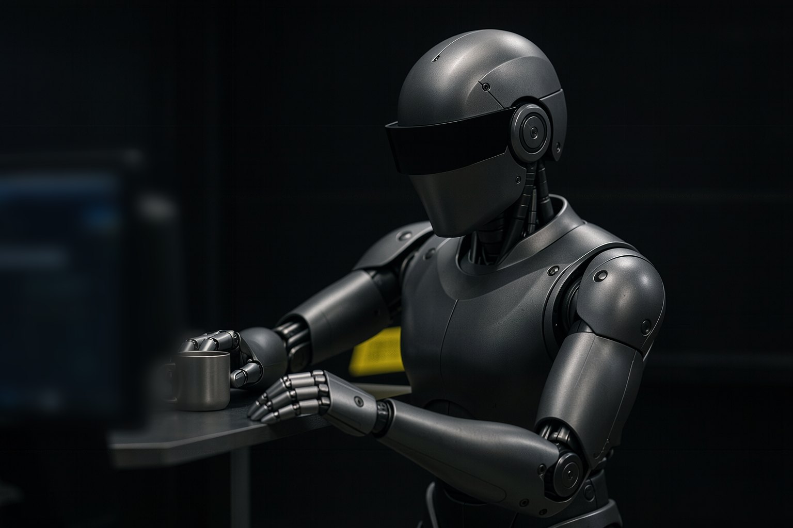
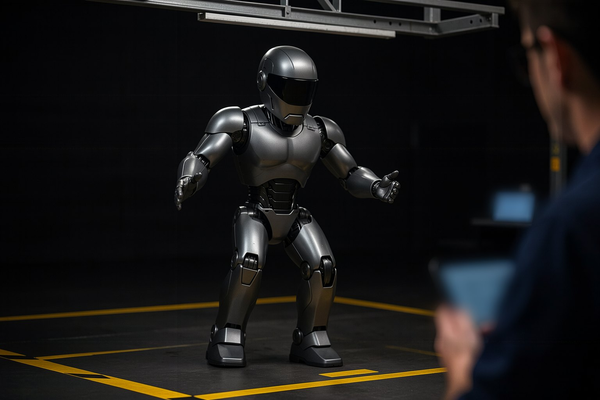

FTH — Formación Tecnológica en Humanoides · curso 3 de 5 · 8 clases
Cuerpo completo: imitar, teleoperar y obedecer
Un humanoide útil no solo camina: copia un gesto humano, sigue a un operador de VR y ejecuta lo que le manda un VLA. En ocho clases armas esa capa en el G1 simulado: lees captura de movimiento, haces el retargeting con GMR, reproduces, teleoperas, mides la mano y verificas la cadena completa. Todo en CPU, sin robot.

- 8clases
- 120minutos de clase
- 24ejercicios con "listo cuando"
- 0datos de terceros redistribuidos
Las clases
De las tres capas de control al proyecto de punta a punta: movimiento humano como dato, retargeting, motion tracking, teleoperación, manos y el comando que viene de un VLA.

Clase 1 · 15 minDel caminar al hacer: whole-body controlCaminar es el comienzo. Para tomar una caja, saludar u obedecer a un VLA, el humanoide necesita coordinar piernas, torso y brazos al mismo tiempo, sin caerse. En esta clase montas el banco de trabajo del curso y cuentas, en un bucle de simulación, las tres capas que hacen eso: quién decide, quién coordina el cuerpo y quién mueve cada articulación. Clase 2 · 15 minMovimiento humano como datoLas policies de whole-body control de 2026 aprenden con horas de movimiento humano. Antes de usar esos datos, necesitas saber leerlos y saber si puedes usarlos. En esta clase abres un clip BVH, cuentas cuadros, fps y articulaciones, escribes un clip tuyo y entiendes por qué el curso no redistribuye ninguna base pública.
Clase 2 · 15 minMovimiento humano como datoLas policies de whole-body control de 2026 aprenden con horas de movimiento humano. Antes de usar esos datos, necesitas saber leerlos y saber si puedes usarlos. En esta clase abres un clip BVH, cuentas cuadros, fps y articulaciones, escribes un clip tuyo y entiendes por qué el curso no redistribuye ninguna base pública. Clase 3 · 15 minRetargeting: del esqueleto humano al robotUna persona mide 1,70 m y tiene articulaciones que el robot no tiene; el G1 mide 1,32 m y, en el modelo de Menagerie, tiene 29 articulaciones con límites. El retargeting es la cuenta que lleva de uno a otro, cuadro a cuadro. En esta clase instalas GMR en un entorno propio, llevas 10 s de boxeo al G1 y verificas cada cuadro contra los límites de las articulaciones.
Clase 3 · 15 minRetargeting: del esqueleto humano al robotUna persona mide 1,70 m y tiene articulaciones que el robot no tiene; el G1 mide 1,32 m y, en el modelo de Menagerie, tiene 29 articulaciones con límites. El retargeting es la cuenta que lleva de uno a otro, cuadro a cuadro. En esta clase instalas GMR en un entorno propio, llevas 10 s de boxeo al G1 y verificas cada cuadro contra los límites de las articulaciones.
Clase 4 · 15 minUna policy que imita cualquier movimientoTener el movimiento en el formato del robot no es hacerlo ejecutar. Si mandas solo los ángulos a los motores, imita por un segundo y se cae: nadie cuida el equilibrio. En esta clase reproduces el boxeo en MuJoCo con y sin pórtico, mides el error de cada articulación y ves qué resuelven BeyondMimic, GMT y SONIC.
Clase 5 · 15 minTeleoperación de cuerpo completoLa teleoperación es la forma más rápida de que un humanoide haga una tarea nueva y de reunir demostraciones para un VLA. El operador mueve los brazos con unas gafas de VR y el robot repite; el retraso es lo que lo arruina. En esta clase teleoperas los dos brazos del G1 con un guion y mides a partir de qué latencia todo se desmorona.
Clase 6 · 15 minManos: el problema que aún no está resueltoEl cuerpo completo camina, se equilibra e imita; a la hora de agarrar, todo depende de una mano con pocos grados de libertad y casi nada de tacto. En esta clase cuentas las articulaciones de la mano del G1 en el modelo, la comparas con dos manos de investigación y mides un agarre simulado, sabiendo qué es ese número y qué no es.
Clase 7 · 15 minCuando un VLA manda en el cuerpo enteroUn VLA ve la escena, entiende la petición y propone una acción, pocas veces por segundo. Quien convierte eso en movimiento seguro de 29 articulaciones, sin caerse, es el whole-body control. En esta clase le das comandos de alto nivel al G1 simulado y ves lo que ejecuta y lo que rechaza antes de moverse.
Clase 8 · 15 minProyecto: un movimiento seguro de punta a puntaCada clase dejó una pieza: clip leído, retargeting sin violaciones, motion tracking medido, chequeo. Lo que va a un robot es la cadena completa, en un solo movimiento. En esta clase corres las cuatro etapas en secuencia, confirmas que todas pasan y hablan del mismo archivo, y generas tu plan de estudio.
Para quién es
- 1Quien programa en Python, ya vio ROS 2 e hizo (o leyó) los cursos 0 a 2 de la FTH.
- 2Quien no tiene un humanoide: las prácticas corren en MuJoCo, en CPU, en segundos. No hace falta GPU.
- 3Quien quiere entender qué hay debajo de un VLA en un robot con piernas: la capa que ejecuta.
Lo que vas a saber hacer
- 1Leer un clip de captura de movimiento y saber si puedes usarlo.
- 2Llevar el movimiento humano al G1 con GMR, sin pasar el límite de ninguna articulación.
- 3Medir por qué seguir ángulos no basta, y el efecto de la latencia en la teleoperación.
- 4Verificar una cadena mocap → retargeting → motion tracking → seguridad antes de mandar algo a un robot.